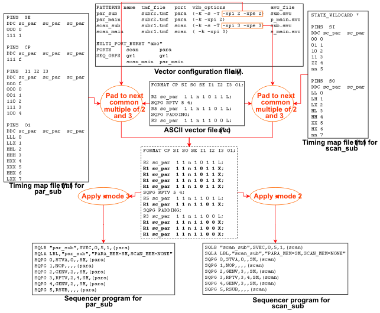

Synchronizing Subroutine Calls in Different Ports
-xpi and -xpe can be specified with integer parameters. These integers influence the number of padding vectors created by v2b. If such an integer is present, then the number of padding vectors will be such that the total number of ASCII vectors in the padded block is directly divisible by this integer (and not only by the x-mode factor of the respective pattern). The purpose of this is to allow synchronization of corresponding blocks in patterns that belong to different ports and run with different x-mode factors. In this section, this will be explained for subroutine calls.
We assume the following scenario:
There are two ports which belong to the same sequencing group (this is a necessary condition for synchronization across ports). The main patterns of both ports have the same structure, that is, they
- have the same number of ASCII vectors
- use the same ASCII device cycle
- have the same sequencer instructions at the same locations.
This also holds for the two subroutines. The two ports are to run with different x-modes. Nonetheless the start of the subroutine and the restart of the main pattern after the subroutine are to be simultaneous in both ports.
The following figure shows how this can be accomplished.

Observe the following points in this figure:
- The processing is only explained for the two subroutines.
- The timing map file fragments show that the x-mode factor for the scan port is 2, and the x-mode factor for the para port is 3. The x-mode factor of the para port is passed to v2b along with the scan_sub pattern as an additional parameter of the -xpi and -xpe options. In the same way v2b is informed of the x-mode factor of scan_sub for the translation of the par_sub pattern. Each of the three sections is padded to 6 ASCII vectors.
- The example uses a common ASCII vector file for both subroutines. But the two main patterns must each have their own ASCII vector file. The reason for this is that the subroutine names must be different in the two main patterns because pattern names must be unique across ports.
- To give an explicit example of the calculation: The 5 ASCII vectors within the RPTV/PADDING construct are padded to the next common multiple of 3 and 2, which is 6. For par_sub with its x-mode factor of 3, this results in 2 binary vectors which are repeated 4 times. This corresponds to 24 ASCII vectors. For scan_sub, which has an x-mode factor of 2, it results in 3 binary vectors which are also repeated 4 times, and this also corresponds to 24 ASCII vectors. The RPTV blocks therefore have the same length in time in both subroutines.